Pasatiempos
Dibujar
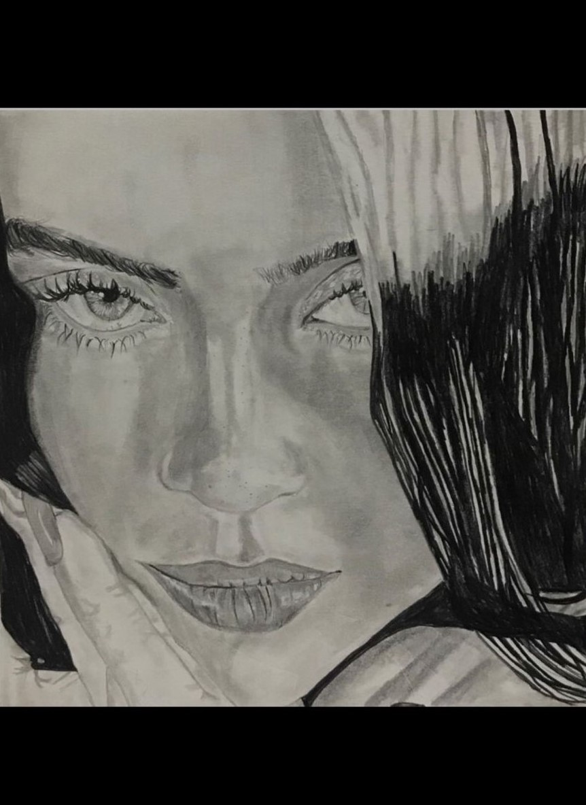 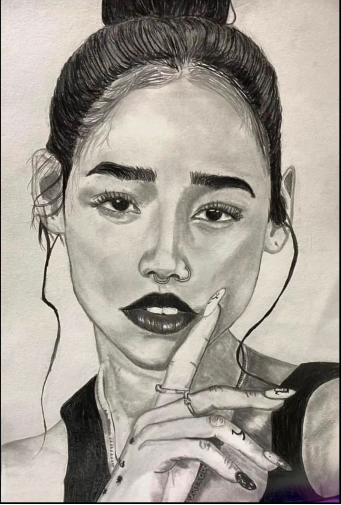 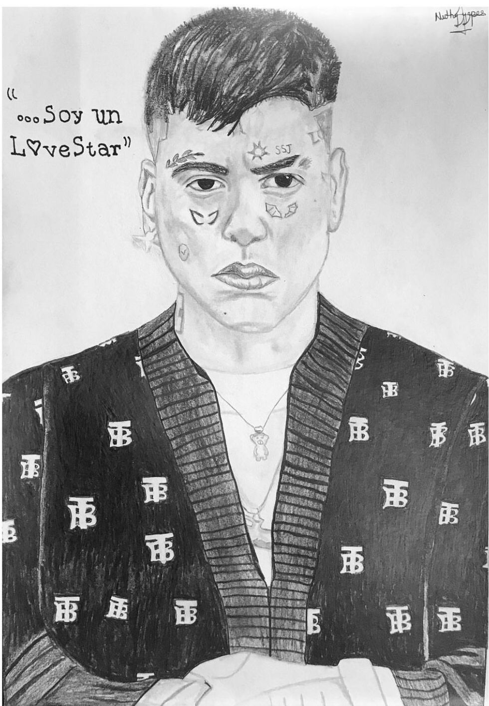 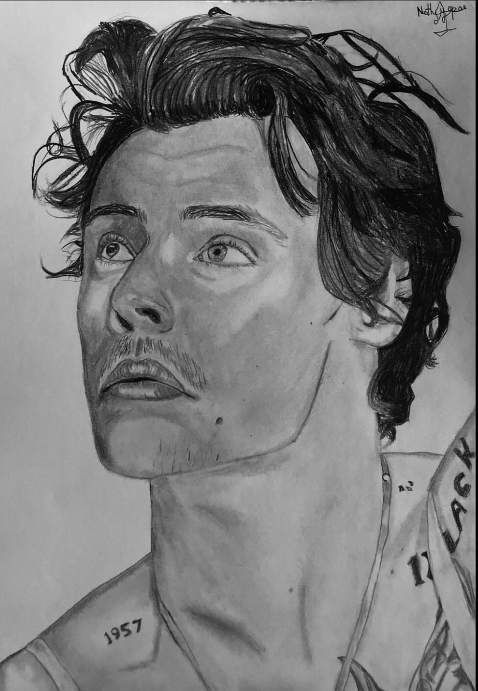 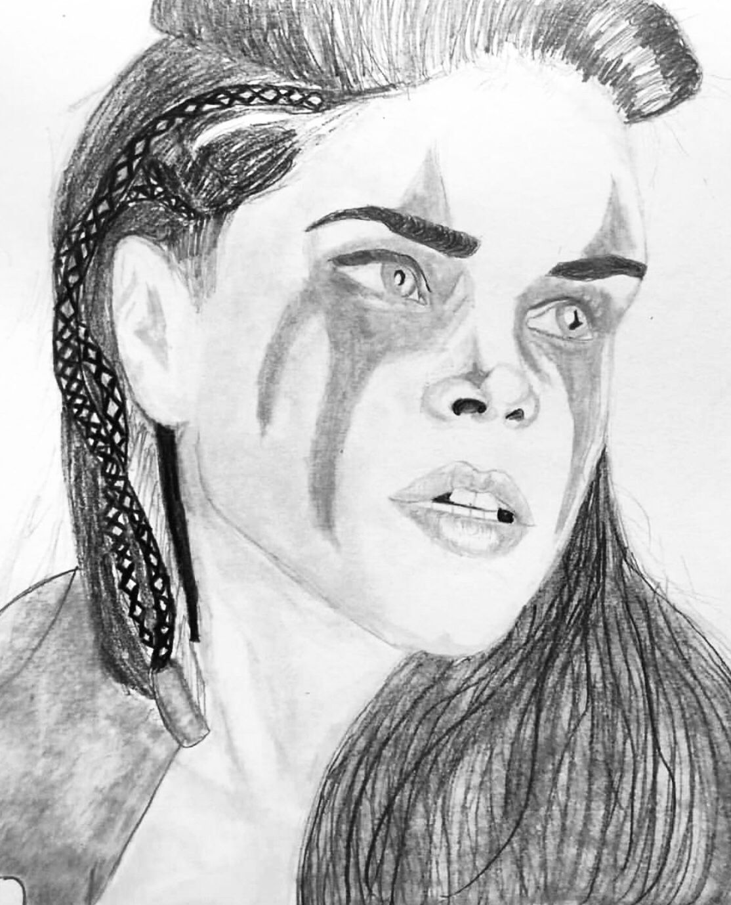 ver másEscribir
Suelo soñar con hacer con mis manos lo que mi corazón desea, sin embargo,
las virtudes que me han sido correspondidas me impiden hacerlo un hecho.
Aún así, esos pensamientos que se apoderan de mis sueños, son una realidad tuya.
Hablo de tu capacidad de acariciar mi alma, de tu capacidad de desnaturalizar
un campo de batalla a un campo de girasoles, de tu capacidad de brindarle orden
y armonía a la tormenta constante que en mi habita.
Por eso, en mis sueños solo existe la necesidad de cuidar tu alma, en la
forma en la que tu haces con la mía; de hecho te confieso, le he pedido al
poderío del cielo que me conceda la virtud de abrazar tu pasado, presente y futuro;
no obstante, me ha sido solo concedido tu presente y futuro, para así, por medio de
las pocas virtudes asignadas en mi ser, sanarte, casi como tu lo hiciste conmigo.
Pero, en mis sueños sigo buscando los caminos para que tu armonía sea absoluta.
Tú, a la que yo le llamo amor, pero que la vida traduce en la palabra más maravillosa, mamá.
Aquella niña con cara de ángel,
posee un armazón con dureza,
cómplice del cuidado de mi alma;
Aquella niña, entre mis brazos,
posee un alma con grietas;
cuéntame de ellas,
niña de porcelana,
mientras creamos cuarzos
para reedificar tu alma.
No estuve cuando se abrieron aquellas grietas,
ni conozco a los causantes de ellas,
pero ahora puedes refugiarte en mis brazos,
mientras bailamos al son de tu canción favorita,
y vivimos la vida,
vivimos la nuestra,
vivimos con ese armazón reconstruido,
que protege nuestras almas.
Sutiles notas musicales escapan del lugar,
con una mujer y sonidos agobiantes que forman su disfraz,
sonidos que parecen danzar a un ritmo del azar,
pero, en realidad, corren sin sentido para no callar.
El ritmo cesa y el silencio llega,
tan abrumador que el disfraz pierde su esencia,
la mujer desnuda siente una presencia,
mira su entorno, pero no la encuentra;
sus gritos melancólicos se ahogan en ella.
-¿Quién es? ¿Por qué me invade?
Al instante, su mirada ligera encuentra la presencia,
se acerca a aquel ventanal que tiene la respuesta,
es ella.
Escuchar Música
 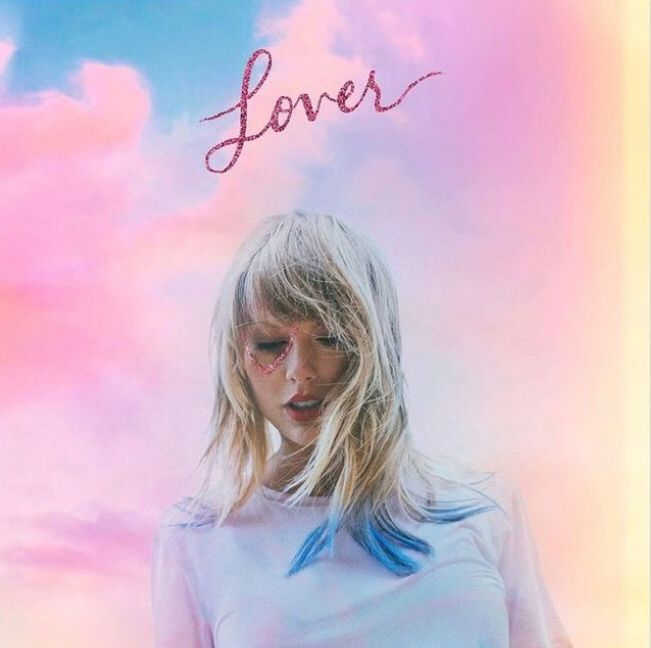
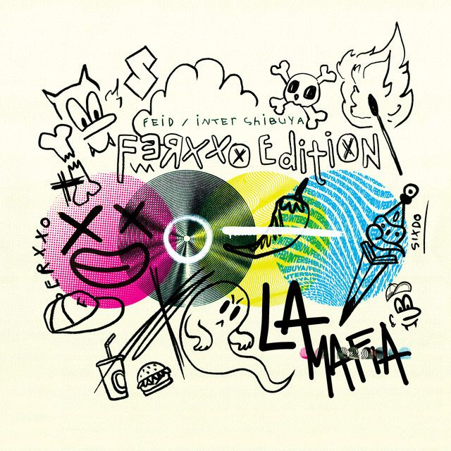
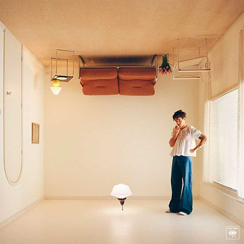
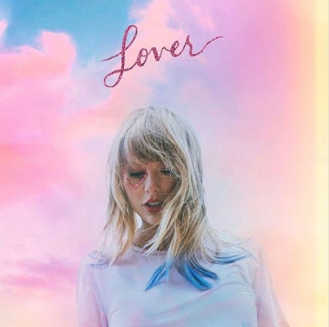
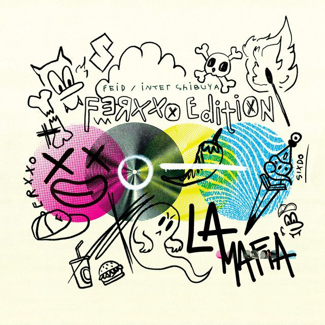
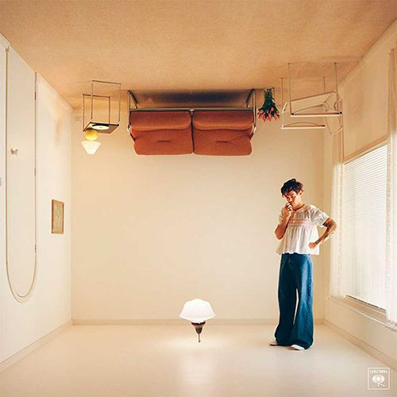
Ver Series


 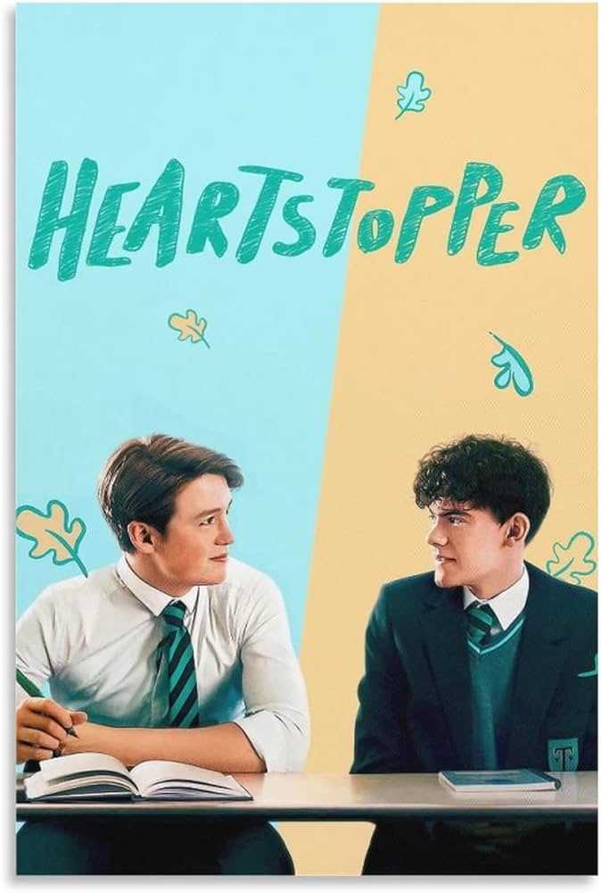
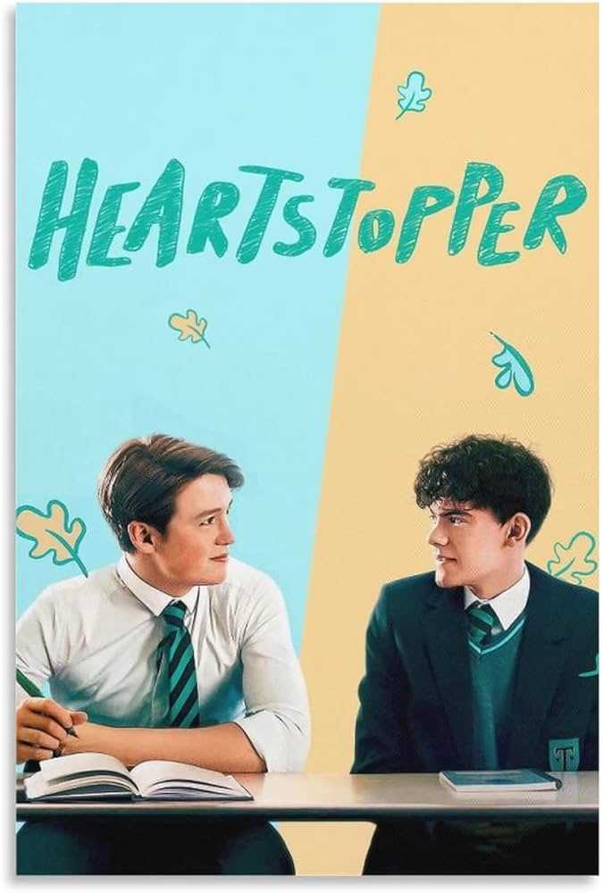